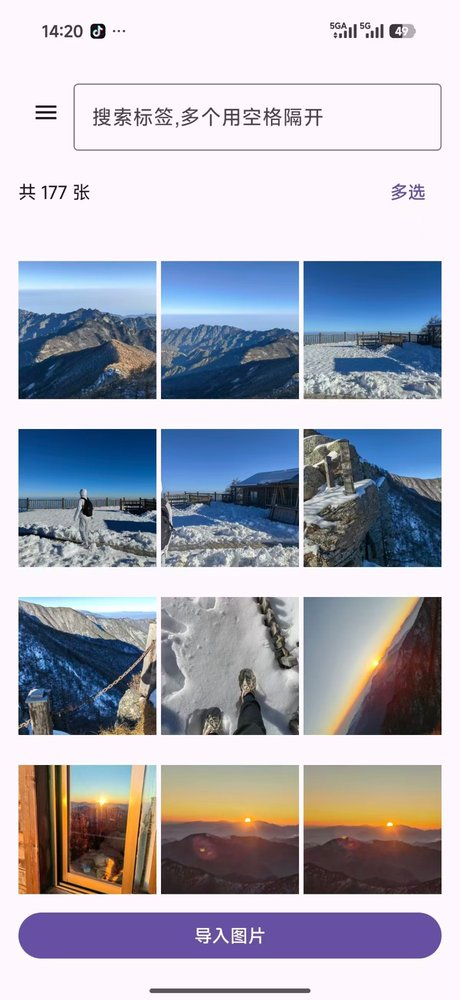
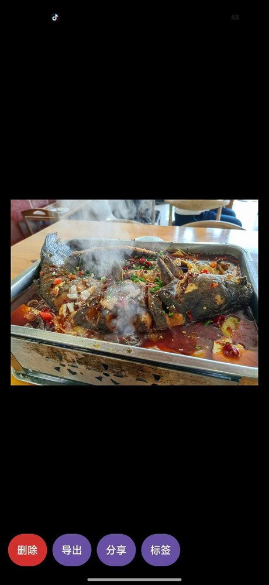
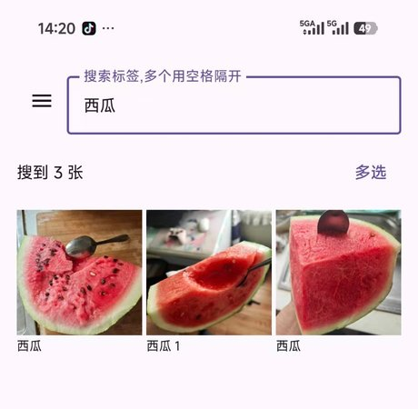

PhotoTag
一个安卓 App：给图片打标签，然后按标签找回来。 图一多就没法翻的场景都适用——旅行照片按目的地和年份归类，二次元图按角色名整理， 资料截图、表情包、灵感素材按主题分。


怎么用
| 导入 | 底部「导入图片」从相册多选。选中的图会复制一份进 App，原图以后删了也不影响这边 |
|---|---|
| 打标签 | 点开任意图片进全屏预览，点「标签」添加；一张图能加多个，已有的标签点一下就删 |
| 搜索 | 顶部搜索框输标签词筛选，标题会跟着变成「搜到 N 张」 |
| 批量 | 长按图片或点「多选」进入多选模式，一次给多张打同一个标签，也能批量删 |
| 删除 | 全屏预览里点「删除」删单张；多选模式下批量删 |
| 拿出去 | 全屏预览底部还有「导出」和「分享」，能把图再发回相册或者直接分享给别人 |
搜索是怎么匹配的
- 单个词模糊匹配——输「巴」能搜到「巴黎」
- 多个词空格隔开取交集——输「巴黎 2024」只显示同时有这两个标签的图
搜到的结果会在标题栏写明「搜到 N 张」，每张图下面显示它自己的标签—— 每张图下面显示它自己的标签。

界面
Material 3 的紫色主题。列表页顶上是搜索框，下面按网格铺图，每张图底下显示它的标签， 标题栏显示「共 N 张」；右上角「多选」，底部一条通栏的「导入图片」。 点开任意一张进全屏预览，底部四个按钮：删除、导出、分享、标签。
怎么做的
Kotlin + Jetpack Compose（Material 3）写的界面，标签和图片的对应关系存在 Room（SQLite）本地数据库里。
整个 App 不联网——连网络权限都没申请，所以图片和标签只待在你自己手机上， 传不出去也同步不了。
进展
- 2026-09-11开了这一页。
- 2026-08第一个能装的版本，导入、打标签、搜索、批量操作、删除都能用了。